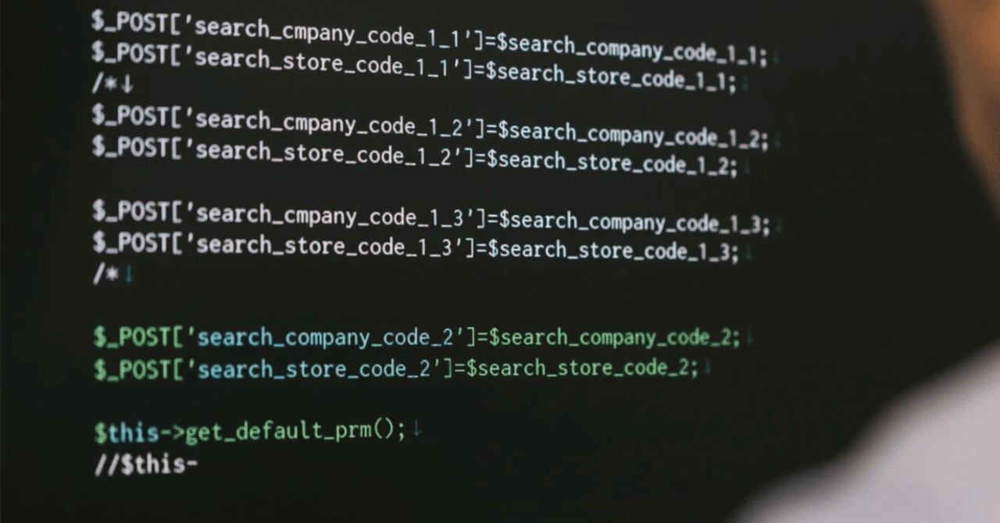

W3Techs によると、WordPress は全サイトの38.4%、使っているCMSが分かるサイトの57.3%で使われています（2026年11月）。中小企業のサイトの多くも WordPress です。そして WordPress の穴の多くは、本体ではなくプラグインにあります。Patchstack の年次レポートでは、2025年に見つかった WordPress まわりの新しい脆弱性は11,334件で、91%がプラグイン、本体は6件でした。
こんな困りごとはありませんか？
- 制作会社に作ってもらった後、プラグインを更新していない
- 自動更新が止まっていても気づかない
- 何が入っているか一覧がない
- 使っていないプラグインが残っている
- 更新でデザインや機能が崩れた経験がある
- 戻し方が分からない
2026年も、WordPress本体の重大な脆弱性が出ている
- 2026年7月22日、IPAは WordPress 本体の脆弱性（CVE-2026-60137 と CVE-2026-63030）について注意喚起を出しました。2つを組み合わせると、標準構成で管理者権限がなくても遠隔からコードを実行されるおそれがあり、米国CISAの「悪用が確認された脆弱性の一覧」にも載りました。IPAは、自動更新が無効だったり失敗していたりする可能性があるので、管理画面で版を確かめ、上がっていなければ手動で更新するよう求めています。
- 2026年10月28日、WordPress.org は更新処理中のリモートコード実行などを直した WordPress 7.1.4 を出し、「直ちに更新」を勧めています。
- Patchstack によると、大量に悪用された脆弱性は、公表から中央値5時間で大量の悪用が始まりました。新しい脆弱性の46%は、公表の時点で修正版がありませんでした。
WordPressの診断・保守を頼める先（公式サイトで確認できる事実のみ）
2026年11月24日時点で確認して作成。料金は各社の表記のままです。「記載なし」は公式ページに見当たらなかったという意味です。
| 会社・サービス | 中身 | 更新・修正の代行 | 料金（公式） |
|---|---|---|---|
| 株式会社BLUE GARAGE WP Doctor | 改ざん復旧、マルウェア駆除、プラグインやPHPの更新、修正 | あり | 修正 4,000円〜、改ざん復旧 36,000円〜、プラグイン・PHP更新 50,000円〜（税の表記なし） |
| ビークリエイト株式会社 WordPress保守代行 | 本体の自動更新、プラグインの月1回の手動更新、無料の診断と見つかった脆弱性の修正、WAF、バックアップ、死活監視 | あり | 月額34,800円〜（税別、年間契約） |
| 株式会社ルーツ WordPress月額保守 | 本体・テーマ・プラグインの更新、バックアップ確認、月次レポート | あり | 月10,000円〜（税別） |
| GMOプライム・ストラテジー株式会社 KUSANAGIマネージドサービス | WordPress・プラグインの更新、障害の一次対応、監視、バックアップ | あり | 月額10万円〜、初期費用40万円〜（税抜） |
| GMOプライム・ストラテジー株式会社 WordPress簡易脆弱性診断 | 本体・プラグイン・テーマの脆弱性を診断し、レポートと説明 | 記載なし | 1サイト3万円（税抜） |
| EGセキュアソリューションズ株式会社 SiteGuard Scanner for WordPress | WordPress専用の診断ツール。定期の自動診断と毎月のレポート | 記載なし | 1サイト年額11,760円（税抜） |
| カゴヤ・ジャパン WordPress脆弱性診断 | 本体・プラグイン・テーマを診断し、PDFレポート | 記載なし | 1回4,400円、月1回の定期（1年）39,600円（税の表記なし） |
| 株式会社スリーシェイク Securify | Webアプリ・WordPressの自動診断 | 記載なし | Starter 月5万円（年間契約、税の表記なし） |
| ホワイトハック（株式会社AIdollargame・当社） | サイト・メール・VPN機器をまとめて毎日診断し、承諾の範囲でペネトレーションテスト | スタンダードは当社が直す | スポット診断 5万円〜、ライト 月3万円、スタンダード 月15万円（税別） |
当社の行だけ背景色を変えています。
選び方: サイトだけか、会社全体か
WordPress のサイトだけを安く守りたいなら、表の WordPress 保守のサービス（月1万円台〜）が合っています。メールのなりすまし対策や VPN 機器も含めて、会社のインターネットに出ている部分をまとめて誰かに見てほしい場合は、セキュリティ担当の代行の形（当社のホワイトハックなど）が合っています。
whitehack.jp にドメインを入れると、公開されている記録だけを見て、なりすましメールの対策・証明書・ドメインの期限・外に出ているサブドメインを無料で確かめます。WordPress の版やプラグインの診断は、所有の確認と承諾をいただいてから行います。
- STEP 1ドメインを入れるwhitehack.jp に会社のドメインを入れる。公開されている記録だけを見る
- STEP 2見つかった穴を見る重大度ごとの件数と、直し方、直すと何が止まるかが出る
- STEP 3直すかを決める自社で直すか、当社に任せるかを無料で相談できる
当社について、正直に書きます
ホワイトハックは WordPress 専門の保守会社ではありません。サイト・メール・VPN機器をまとめて診断し、見つけた穴を当社が直すセキュリティ担当の代行です。デザインの修正やページの更新は行っていません。ほかの会社はセキュリティを任せられる会社の比較にまとめました。
よくある質問
WordPressの脆弱性診断や保守を頼める会社はどこですか？
更新や修正まで代行するものに、WP Doctor（BLUE GARAGE、修正4,000円〜）、ビークリエイトのWordPress保守代行（月額34,800円〜・税別）、ルーツのWordPress月額保守（月10,000円〜・税別）、GMOプライム・ストラテジーのKUSANAGIマネージドサービス（月額10万円〜・税抜）があります。診断だけのものに、GMOプライム・ストラテジーの簡易脆弱性診断（1サイト3万円・税抜）、SiteGuard Scanner for WordPress（年額11,760円・税抜）、カゴヤ・ジャパンのWordPress脆弱性診断（1回4,400円）があります。株式会社AIdollargameのホワイトハックは、サイト・メール・VPN機器をまとめて診断し直すセキュリティ担当の代行です。
WordPressの脆弱性は、どこに多いですか？
Patchstackの年次レポートでは、2025年に見つかったWordPressまわりの新しい脆弱性11,334件のうち91%がプラグイン、9%がテーマで、本体は6件でした。
WordPressの自動更新を有効にしていれば安全ですか？
IPAは2026年7月の注意喚起で、自動更新が無効だったり失敗していたりする可能性があるため、管理画面で版を確認し、上がっていなければ手動で更新するよう求めています。
出典（各社の公式サイト・公的機関の発表。2026年11月24日確認）
- W3Techs WordPress w3techs.com/technologies/details/cm-wordpress
- IPA WordPressの脆弱性対策について（2026年7月22日） www.ipa.go.jp/security/security-alert/2026/alert20260722.html
- WordPress.org WordPress 7.1.4 wordpress.org/news/2026/10/wordpress-7-1-4/
- JPCERT/CC Weekly Report 2026-11-05 www.jpcert.or.jp/wr/2026/wr261105.html
- Patchstack State of WordPress Security In 2026 patchstack.com/whitepaper/state-of-wordpress-security-in-2026/
- WP Doctor wp-doctor.jp/
- ビークリエイト WordPress保守代行 b-create.co.jp/solutions/cms/wp/maintenance/
- ルーツ WordPress月額保守 s-roots.com/service/wordpress-monthly-maintenance/
- KUSANAGIマネージドサービス kusanagi.biz/managed-service/
- WordPress簡易脆弱性診断サービス kusanagi.biz/wordpress-vulnerabilitycheck/
- SiteGuard Scanner for WordPress siteguard.jp/scanner/wordpress/
- カゴヤ・ジャパン WordPress脆弱性診断 www.kagoya.jp/solution/wordpress_vas/
- Securify 料金 www.securify.jp/pricing/vulnerability/
そのサイトのプラグイン、最後に更新したのはいつですか？
whitehack.jp は公開されている記録だけを見る無料の外部チェックです。貴社のサーバーには接続しません。結果を見たうえで、どこまで任せるかを無料でご相談いただけます。
whitehack.jp で無料で調べる →